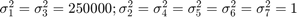
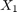
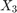
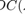
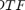
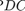
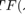

WINTERHALDER ET AL. (2005) 7-DIMENSION UNBALANCED RANDOM INDEPENDENT VARIABLES
Description:
Expanded to seven variables and modified to consider unbalanced variances example taken from: Winterhalder et al. Comparison of linear signal processing techniques to infer directed interactions in multivariate neural systems. Signal Processing 85:2137--2160, 2005.
Contents
- Data sample generation
- Data generation function:
- PDC/DTF estimation and analysis parameters
- Data pre-processing: detrending and standardization options
- MVAR model estimation
- Testing the adequacy of MAR model fitting through Portmanteau test
- Granger causality test (GCT) and instantaneous GCT
- PDC, threshold and confidence interval calculations.
- Plotting options set up, mostly cosmetic for xplot.m routine:
- Remarks on nonstandardized unbalanced noise analysis:
- Information DTF estimation and analysis parameters
- Remarks on false-positive connectivity detection ratio:
http://dx.doi.org/10.1016/j.sigpro.2005.07.011
Example: Seven random independent variables with unbalanced variances. Variant of Random Independent Process with 7 variables') with following variances:

Data sample generation
clear; clc; format compact; format short flgPrintScreen = 'Screen'; %'Screen' or 'Print' nDiscard = 1000; % number of points discarded at beginning of simulation nPoints = 5000; % number of analyzed samples points alpha = 0.05; % Significance level for PDC/DTF null hypothesis test
Data generation function:
u = fwinterhalder2005_variant(nPoints, nDiscard);
chLabels = {'x_1';'x_2';'x_3';'x_4';'x_5';'x_6';'x_7'};%chLabels = [];
fs = 1; % Normalized sampling frequency
======================================================================
Winterhalder et al. Signal Processing. 85:2137--60, 2005
Variant of Random Independent Process with 7 variables
[sigma1=500|sigma2=1|sigma3=500|sigma4=1|sigma5=1|sigma6=1|sigma7=1]
======================================================================
PDC/DTF estimation and analysis parameters
% Common routine segment for all examples
Data pre-processing: detrending and standardization options
flgDetrend = 1; % 1: Detrending the data set flgStandardize = 0; % 0: No standardization % Checking data dimension [nChannels,nSegLength] = size(u); if nChannels > nSegLength, u = u.'; [nChannels,nSegLength] = size(u); end; % Detrending if flgDetrend, for i = 1:nChannels, u(i,:) = detrend(u(i,:)); end; disp('Time series were detrended.'); end; % Standardization if flgStandardize, for i = 1:nChannels, u(i,:) = u(i,:)/std(u(i,:)); end; disp('Time series were scale-standardized.'); end;
Time series were detrended.
MVAR model estimation
maxIP = 30; % maximum model order to consider. alg = 1; % 1 = Nutall-Strand MVAR estimation algorithm criterion = 1; % 1 = AIC, Akaike Information Criteria disp('Running MVAR estimation and GCT analysis routines.') [IP,pf,A,pb,B,ef,eb,vaic,Vaicv] = mvar(u,maxIP,alg,criterion); disp(['Number of channels = ' int2str(nChannels) ' with ' ... int2str(nSegLength) ' data points; MAR model order = ' int2str(IP) '.']);
Running MVAR estimation and GCT analysis routines. maxOrder limited to 30 IP=1 vaic=422617.176616 IP=2 vaic=422649.396902 Number of channels = 7 with 5000 data points; MAR model order = 1.
Testing the adequacy of MAR model fitting through Portmanteau test
h = 20; % testing lag value MVARadequacy_signif = 0.05; % VAR model estimation adequacy significance % level aValueMVAR = 1 - MVARadequacy_signif; % Confidence value for the testing flgPrintResults = 1; % flag = 1, print analysis results [Pass,Portmanteau,st,ths] = mvarresidue(ef,nSegLength,IP,aValueMVAR,h,... flgPrintResults);
====================================================================================================
MVAR RESIDURES TEST FOR WHITENESS
----------------------------------------------------------------------------------------------------
Good MAR model fitting! Residues white noise hypothesis NOT rejected.
Pass = 0.0367347
st = 933.968
Granger causality test (GCT) and instantaneous GCT
gct_signif = alpha; % Granger causality test significance level igct_signif = alpha; % Instantaneous GCT significance level metric = 'diag'; % euc = original PDC or DTF; % diag = generalized PDC (gPDC) or DC; % info = information PDC (iPDC) or iDTF. flgPrintResults = 1; % Flag to control printing gct_alg.m results on command window. [Tr_gct, pValue_gct] = gct_alg(u,A,pf,gct_signif,flgPrintResults); [Tr_igct, pValue_igct] = igct_alg(u,A,pf,igct_signif,flgPrintResults);
====================================================================================================
GRANGER CAUSALITY TEST
----------------------------------------------------------------------------------------------------
Connectivity matrix:
NaN 0 0 0 0 0 0
0 NaN 0 0 0 0 0
0 0 NaN 0 0 0 1
0 0 0 NaN 0 1 0
0 1 0 0 NaN 0 0
0 0 0 0 0 NaN 0
0 0 0 0 0 0 NaN
Granger causality test p-values:
NaN 0.8666 0.1988 0.9753 0.2789 0.1655 0.3122
0.6227 NaN 0.6688 0.1404 0.7020 0.5486 0.7910
0.9713 0.7437 NaN 0.5379 0.8566 0.5638 0.0265
0.2671 0.5431 0.2591 NaN 0.9457 0.0449 0.4402
0.2514 0.0292 0.2652 0.3301 NaN 0.6886 0.2404
0.8069 0.8272 0.6242 0.9621 0.0660 NaN 0.1708
0.9621 0.7787 0.9411 0.5651 0.9584 0.2493 NaN
====================================================================================================
INSTANTANEOUS GRANGER CAUSALITY TEST
----------------------------------------------------------------------------------------------------
Instantaneous connectivity matrix:
NaN 0 0 0 0 0 1
0 NaN 0 0 0 0 0
0 0 NaN 0 0 0 0
0 0 0 NaN 0 0 0
0 0 0 0 NaN 0 0
0 0 0 0 0 NaN 0
1 0 0 0 0 0 NaN
Instantaneous Granger Causality test p-values:
NaN 0.0544 0.9224 0.1141 0.3855 0.7155 0.0205
0.0544 NaN 0.9215 0.7536 0.2873 0.9987 0.2160
0.9224 0.9215 NaN 0.8713 0.4462 0.1005 0.3323
0.1141 0.7536 0.8713 NaN 0.6049 0.8625 0.2664
0.3855 0.2873 0.4462 0.6049 NaN 0.8139 0.9833
0.7155 0.9987 0.1005 0.8625 0.8139 NaN 0.3075
0.0205 0.2160 0.3323 0.2664 0.9833 0.3075 NaN
>>>> There is a pair of channels with significant Instantaneous
Granger Causality.
====================================================================================================
PDC, threshold and confidence interval calculations.
metric = 'euc'; % Original DTF estimation nFreqs = 128; % Number of frequency points to consider
PDC analysis results are saved in c data structure. See asymp_dtf.m or issue
>> help asymp_pdc
command for more detail.
c = asymp_pdc(u,A,pf,nFreqs,metric,alpha);
c.Tragct = Tr_gct;
c.pvaluesgct = pValue_gct;
Plotting options set up, mostly cosmetic for xplot.m routine:
flgMax = 'all'; flgSignifColor = 4; % red + green flgScale = 3; % [0 1]/[0 .1]/[0 .01]
flgColor parameter for PDC matrix-layout plot.
flgColor = [0]; % Plotting option for automatic scaling for small PDC % values. % if flgColor = 0, y-axis scale = [0 1] % elseif flgColor = 1, xplot routine rescale % the y-axis automatically according to following rules: % If .001<= max(|PDC(f)|^2) < .01 background-color = light-blue, % so that y-axis scale = [0 .1] % elseif max(|PDC(f)|^2) < .001 background-color = light-purple % and y-axis = [0 .01]. % [1 2 3 4 5 6 7] flgPrinting = [1 0 1 0 0 0 0]; % blue-line | | | | | | 7--Spectra (0: w/o; 1: Linear; 2: Log; 3: PDC2; % | | | | | | 4: Linear normalized; 5: Log spectra + PDC2) % gray | | | | | 6--Coh2 (0: w/o Coh2; 1: w Coh2) % dashed-blue | | | | 5--Print GCT results % dashed-blue | | | 4--Plot confidence interval % red | | 3--Significant PDC2|DTF2 in red lines % dashed-black | 2--Patnaik threshold level in black dashed-lines % green 1-- PDC2/DTF2 in green lines or black w/o statistics, % See flgSignifColor bellow for line color selection. w_max=fs/2; strID = 'Winterhalder et al. Signal Processing 85:2137?60, 2005'; strTitle = [' Independent Gaussian Noise: \sigma_1=\sigma_3=500;' ... ' \sigma_2 = \sigma_4 = \sigma_5 = 1']; flgScale = 1; [h,hxlabel hylabel] = xplot(strID, c, ... flgPrinting,fs,w_max,chLabels,flgColor,flgScale,flgMax,flgSignifColor); xplot_title(alpha,metric,'PDC',strTitle); flgPrinting = [1 1 1 2 3 0 0]; [hp,hxlabel hylabel] = xplot_pvalues(strID, c, ... flgPrinting,fs,w_max,chLabels,flgColor,flgScale); xplot_title(alpha,metric,'p-value PDC',strTitle);


Remarks on nonstandardized unbalanced noise analysis:
- Note that in this example the time series were not standardized.
- As a consequence, due to the high variance/power of channels  and ,  from other channels reaching these channels are high, but still in most cases not significant (represented by green lines).
- The Patnaik thresholds plotted in dashed-lines may not be visible in these subplots because their values are well above upper limit of scale range which is limited to [0 1] on y-axis.
Information DTF estimation and analysis parameters
If the metric is either 'diag' or 'info', the unbalanced noises are ruled out or scaled in their formulation as you can see in the information DTF calculation results shown bellow. Same consideration would apply for information PDC.
PDC analysis results are saved in d structure. See asymp_dtf.m or issue
>> help asymp_dtf
for more detail.
When flgColor=1 parameter option is used in the xplot.m routine, the y-axis intervals: (a) [0 .01] background is colored in LIGHT-PURPLE; (b) (.01 .1] in LIGHT-BLUE; and (c) (.1 1] is WHITE. If the y-axis is scaled according to the maximum amplitude of the measures, this color coding may help easily getting clue about the magnitude  or  estimates.
If the background is LIGHT-PURPLE one would know the maximum amplitude is smaller than 1/100, while with LIGHT-BLUE background is smaller than 1/10.
Remarks on false-positive connectivity detection ratio:
- As 42 combinations of DTF/GC are tested, chances are that you will see significant  (red lines), also in the case of (see above), in some plottings. The significant DTF probability depends on significance level you choose for null hypothesis DTF testing.
- The false-positive rate is approximately equal to the chosen
 value.
value. - The similar argument applies to "instantaneous Granger causality" outcomes, and combination of 21 pairs of variables are considered as iGC is a symmetric relation.